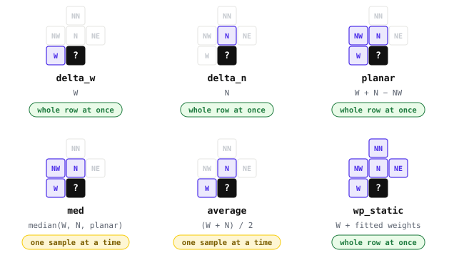

Predictors
A predictor estimates a sample from decoded neighbours and stores the residual. Smooth tiles produce small residuals that terminal codecs can code well. The six predictors read different neighbours and decode at different speeds.

The green four rebuild whole rows. delta_n adds the row above. The others use a prefix sum suited to SIMD. med and average decode one sample at a time. Fast on one CPU core shows why.
Predictors reconstruct the original raster exactly. Predictors use wrapping unsigned arithmetic on raw bits. Data from 8 to 64 bits, including floats, round-trips bit for bit. Prediction restarts at each plane, so cube bands are predicted separately.
01delta_w
delta_w stores each sample minus the one on its left. The first sample of every row stays whole, so rows never depend on each other.
Use it when data is smooth along rows but not across them, such as a product written one scan line at a time. Try planar otherwise.
| ctid | 0x72D701 |
|---|---|
| header | uint32 · row width in samples |
| widths | 8 · 16 · 32 · 64-bit elements, read as integers |
| decode | rᵢ + previous reconstructed, per row (prefix sum) |
// encode, each row on its own
r[y][0] = s[y][0];
for (x = 1; x < w; x++) r[y][x] = s[y][x] - s[y][x - 1];
// decode, a prefix sum along the row
o[y][0] = r[y][0];
for (x = 1; x < w; x++) o[y][x] = r[y][x] + o[y][x - 1];geozl.lossless.DeltaW(width)02delta_n
delta_n stores each sample minus the one directly above it. The first row of each plane stays whole, so columns never depend on each other.
Use it when structure runs north to south, or when each row is a small change on the one before, as in a band stack with one band per row. delta_n is the fastest predictor to decode. Each row needs one SIMD add with the row above and no prefix sum.
| ctid | 0x72D702 |
|---|---|
| header | uint32 · row width in samples + uint32 · plane count, when above one |
| widths | 8 · 16 · 32 · 64-bit elements, read as integers |
| decode | rᵢ + row above, per column |
// encode, the first row stays whole
for (y = 1; y < h; y++)
for (x = 0; x < w; x++) r[y][x] = s[y][x] - s[y - 1][x];
// decode, each row is one vector add
for (y = 1; y < h; y++)
for (x = 0; x < w; x++) o[y][x] = r[y][x] + o[y - 1][x];geozl.lossless.DeltaN(width, planes=1)03planar
planar predicts each sample as W + N − NW, which continues the local slope. On a perfect plane every residual away from the first row and column is zero, and on real terrain they stay small.
Try planar first. Most recipes start with it. It overshoots sharp edges, where med does better.
| ctid | 0x72D703 |
|---|---|
| header | uint32 · row width in samples + uint32 · plane count, when above one |
| widths | 8 · 16 · 32 · 64-bit elements, read as integers |
| decode | fold N−NW from the row above, then prefix-sum the row |
// a neighbour outside the plane reads as zero
W = x > 0 ? s[y][x - 1] : 0;
N = y > 0 ? s[y - 1][x] : 0;
NW = x > 0 && y > 0 ? s[y - 1][x - 1] : 0;
// encode
r[y][x] = s[y][x] - (W + N - NW);
// decode, the same neighbours read from the output o
t[x] = r[y][x] + N - NW; // the row above is already decoded
o[y][x] = t[x] + W; // a prefix sum along the rowgeozl.lossless.Planar(width, planes=1)04med
med is the median edge detector from JPEG-LS. When NW sits across an edge, it predicts from the neighbour on the sample's own side. Otherwise it is planar.
Use it on crisp edges between flat regions, such as field boundaries and built-up areas. It decodes one sample at a time, with no prefix sum.
| ctid | 0x72D705 |
|---|---|
| header | uint32 · row width in samples + uint32 · plane count, when above one |
| widths | 8 · 16 · 32 · 64-bit elements, read as integers |
| decode | median(W, N, W+N−NW) per sample, in order |
// prediction, from W, N and NW as unsigned integers
if (NW >= max(W, N)) p = min(W, N);
else if (NW <= min(W, N)) p = max(W, N);
else p = W + N - NW;
r = s - p; // encode
o = r + p; // decode, one sample at a timegeozl.lossless.Med(width, planes=1)05average
average predicts each sample as the mean of W and N, so the guess always lies between them. It never overshoots at an edge, but it cannot follow a slope.
Use it on textured or noisy surfaces, where neither a plane nor a clean edge fits. Like med it decodes one sample at a time.
| ctid | 0x72D706 |
|---|---|
| header | uint32 · row width in samples + uint32 · plane count, when above one |
| widths | 8 · 16 · 32 · 64-bit elements, read as integers |
| decode | floor((W + N) / 2) per sample, in order |
// floor((W + N) / 2) without overflow
p = (W >> 1) + (N >> 1) + (W & N & 1);
r = s - p; // encode
o = r + p; // decode, one sample at a timegeozl.lossless.Average(width, planes=1)06wp_static
wp_static predicts W plus a weighted sum of N, NW, NE and NN, with weights fitted to each tile. The encoder keeps the fitted weights only if they beat planar.
Use it when a tile has a dominant direction that is neither horizontal nor vertical. The fit costs encode time, and one set of weights covers the whole tile.
| ctid | 0x72D707 |
|---|---|
| header | uint32 width · uint8 shift · 4×int16 coeffs + uint32 · plane count, when above one |
| widths | 8 · 16 · 32 · 64-bit elements, read as integers |
| decode | P = W + ((Σ cᵢ·tapᵢ + round) >> shift), prefix sum per row |
// weights cN, cNW, cNE, cNN and shift are in the header
rnd = shift ? 1 << (shift - 1) : 0;
K = (cN * N + cNW * NW + cNE * NE + cNN * NN + rnd) >> shift;
r = s - (W + K); // encode
o = r + W + K; // decode, K is known from the rows abovegeozl.lossless.WpStatic(width, planes=1)